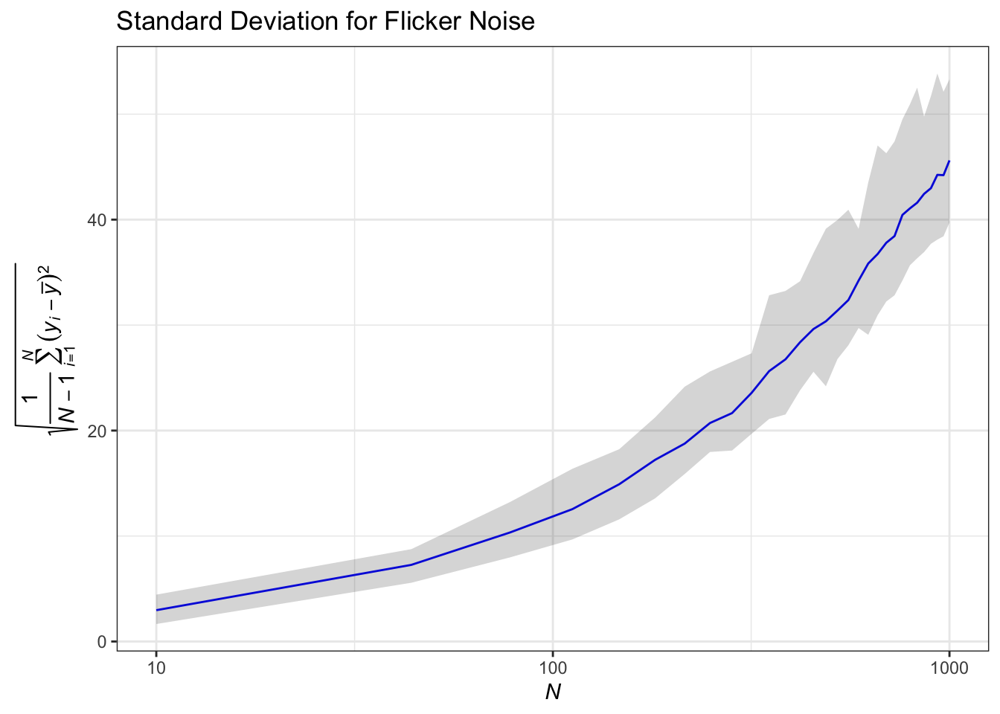
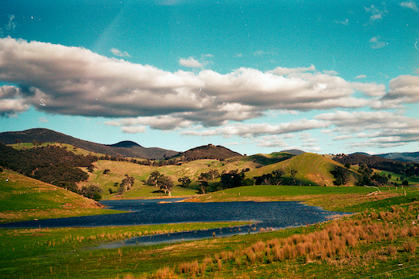
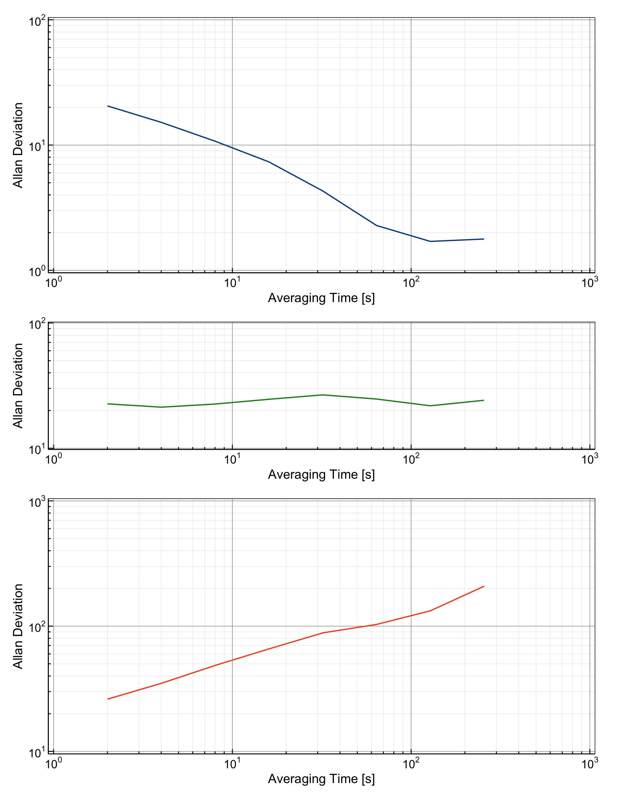

A Gentle Introduction to Allan Deviation Measure
Noise
Measurements
Statistics
This post describes the Allan deviation as a method for analyzing frequency stability. The Allan deviation is widely regarded as the most prevalent time-domain measure of frequency stability. Similar to standard deviation, it quantifies fractional frequency fluctuations; however, it possesses the distinct advantage of convergence for the majority of noise types. This makes the Allan deviation particularly valuable in the evaluation of frequency stability across various applications in laser spectroscopy.

Introduction
Traditional second-moment measures of dispersion like standard deviation are often inadequate for quantifying stability over varying time intervals, particularly for non-stationary time series data in which noise processes that change over time. This limitation led to the development of the Allan deviation in the 1960s by David Allan, then working at the National Bureau of Standards (now NIST). His work was driven by the need to compare and improve the stability of atomic clocks and frequency standards, crucial for navigation, telecommunications, and fundamental physics experiments.
The standard deviation, \(s\), is given by:
\[ s = \sqrt{s^2} \]
where \(s^2\) is the standard variance and is defined as:
\[ s^2 = \frac{1}{N-1}\sum_{i=1}^N(y_i-\bar{y})^2 \]
with \(y_i\) are the \(N\) fractional frequency values, and \(\bar{y} = \frac{1}{N}\sum_{i=1}^N y_i\) is the average frequency.
The use of standard deviation as a measure of dispersion in non-stationary noises, such as flicker FM noise, reveals significant limitations, as shown in the figure below.
We can see that standard deviation increases with sample size. This phenomenon arises because standard deviation relies on deviations from the mean, which is inadequate for non-stationary time series. In contrast, employing Allan variance mitigates these issues by utilizing first differences of fractional frequency values, thus providing a more reliable metric for frequency stability.
Allan variance serves as a robust tool for assessing frequency stability across varying averaging times, effectively distinguishing between different noise processes. Its square root, known as Allan deviation, is particularly valued for its interpretability and ease of comparison, making it a foundational measure in fields such as metrology, geophysics, and laser spectroscopy.
Power Law Noise
The phase and frequency fluctuations of a frequency source can often be well-described by one or more power law noise processes having a spectral characteristic of \(S(f) \approx f^{\alpha}\) where \(f\) is the Fourier or sideband frequency in hertz and \(\alpha\) is the power law exponent. Note that power law noise doesn’t necessarily have to have an integer \(\alpha\), mixtures of noise types are possible.
| Noise | Color | \(\alpha\) (Phase) | \(\alpha\) (Frequency) |
|---|---|---|---|
| White | White | 2 | 0 |
| Flicker | Pink | 1 | -1 |
| Random Walk | Brown | 0 | -2 |
The more divergent noise types are sometimes referred to by their color. White noise has a flat spectral density (by analogy to white light). Flicker noise has an \(f^{-1}\) spectral density, and is called pink or red (more energy toward lower frequencies). Random walk has \(f^{-2}\) spectral density is called brown, and \(f^{-3}\) (flicker walk) noise is called black. Because the white, flicker, and random walk noise types can apply to either phase or frequency data, these three noise types, along with phase-frequency conversions, will cover all five common noises. Note that those conversions change the exponent by 2, and that white frequency noise is the same as random walk phase noise, since both have \(\alpha = 0\).
- White frequency noise: This noise arises from random fluctuations in the frequency and is common in many physical systems.
- Flicker frequency noise: Steady noise level independent of the averaging time.
- Random walk frequency noise: This type of noise often results from cumulative effects, such as thermal expansion or mechanical drift, that grow over time.
- White phase noise: Very short-term fluctuations in the phase.
- Flicker phase noise: This noise has a slower decrease with averaging time compared to white phase noise.
Examples of Noise Generation
Examples of the four most common of these noises (i.e., \(\alpha = 0, 1, 2\) and \(3\)) are shown below.

Allan Variance
Each type of noise dominates at different time scales and affects the stability of a frequency source differently. The Allan variance is uniquely suited to distinguish these noise types because it analyzes stability as a function of the averaging time \(\tau\). Mathematically, the Allan variance, \(\sigma_y^2(\tau)\), is defined as:
\[ \sigma_y^2(\tau) = \frac{1}{2(N-1)}\sum_{i=1}^{N-1}(\bar{y}_{i+1}-\bar{y}_i)^2 \]
where, \(\bar{y}_i\) is the time-series of fractional frequency at averaging time, and \(N\) is the total number of averaging intervals.
In terms of time-series of phase data, the Allan variance is calculated as:
\[ \sigma_y^2(\tau = m\tau_0) = \frac{1}{2(m\tau_0)^2(N-2)}\sum_{i=1}^{N-2}(x_{i+2}-2x_{i+1}+x_i)^2 \]
where \(x_i\) is the \(i\)-th of the \(N\) phase values spaced by the measurement interval \(\tau\), \(m\) is the averaging factor and \(\tau_0\) is the basic measurement interval.
Just as with standard deviation, the Allan deviation, \(\sigma_y(\tau)\), is defined as the squared root of the Allan variance and is given by:
\[ \sigma_y(\tau) = \sqrt{\sigma^2_y(\tau)} \]
It computes the variance between consecutive overlapping time intervals in the time series, with each pair of adjacent intervals contributing a single term to the computation. Although it is well suited for characterizing white noise and random walk frequency noise, it does not use all available data because it relies on non-overlapping intervals. This results in reduced statistical efficiency for longer time series. For white FM noise, the Allan variance is equivalent to the ordinary variance. However, it has the advantage of converging to a finite value for more divergent types of noise, such as flicker noise, regardless of the number of samples. The confidence interval of an estimate of the Allan variance depends on the type of noise and is typically estimated as \(±\frac{\sigma_y(\tau)}{\sqrt{N}}\).
Overlapping Allan Variance
The maximal overlap Allan deviation is a refinement of the classical Allan deviation that uses all possible overlapping pairs of adjacent intervals for the computation. It maximizes the overlap by considering every possible pair of adjacent intervals of duration \(\tau\), rather than restricting to non-overlapping intervals. Consequently, the maximal overlap Allan deviation increases statistical efficiency since it uses the entire dataset for each \(\tau\) while providing smoother and more reliable results, especially for longer datasets or when the signal has non-white noise components. The overlapped Allan deviation is the most common measure of time-domain frequency stability. The accronym AVAR has come to be used mainly for this form of the Allan variance, and ADEV for its square root.
The maximal overlap Allan variance is given by:
\[ \sigma_y^2 = \frac{1}{2m^2(N-2m+1)}\sum_{j=1}^{N-2m+1} \left( \sum_{i=j}^{j+m-1}(\bar{y}_{i+m}-\bar{y}_i) \right )^2 \]
In terms of phase data, the overlapping Allan variance can be estimated from a set of \(N\) time measurements as:
\[ \sigma^2_y(m\tau_0) = { 1 \over 2 (m \tau_0 )^2 (N-2m) } \sum_{n=1}^{N-2m} ( {x}_{n+2m} - 2x_{n+1m} + x_{n} )^2 \]
Modified Allan variance
The modified Allan variance is another common time domain measure of frequency stability that address the inability to separate white phase modulation from flicker phase modulation using traditional Allan variance. It is estimated from a set of \(N\) frequency measurements for averaging time \(\tau = m\tau_0\), by the expression:
\[ \sigma_y^2(\tau) = \frac{1}{2m^4(N-3m+2)}\sum_{j=1}^{N-3m+2} \left[ \sum_{i=j}^{i+m-1} \left( \sum_{k=i}^{i+m-1}(y_{k+m} - y_k) \right) \right]^2 \]
In terms of phase data,
\[ \sigma^2_y(m\tau_0) = { 1 \over 2 (m \tau_0 )^2 (N-3m+1) } \sum_{j=1}^{N-3m+1} \left[ \sum_{i=j}^{j+m-1} {x}_{i+2m} - 2x_{i+m} + x_{i} \right]^2 \] The modified Allan variance is the same as the normal Allan variance for \(m\) = 1. It includes an additional phase averaging operation, and has the advantage of being able to distinguish between white and flicker PM noise. It offers the highest statistical efficiency of the three methods, capturing long-range correlations in the data, making it more robust for non-stationary or highly correlated signals. However, the computational complexity is higher due to the extensive overlap and inclusion of all interval combinations.
| Feature | Allan variance | Overlapping Allan variance | Modified Allan variance |
|---|---|---|---|
| Overlap | No | Adjacent intervals only | All intervals of length \(\tau\) |
| Efficiency | Low | Higher than classical | Highest |
| Complexity | Low | Moderate | High |
| Noise Sensitivity | Good for simple noise models | Better for colored noise | Best for complex noise structures |
| Use Cases | Simple analysis | Reliable characterization | Advanced analysis with long-range correlations |
Examples
Below, we demonstrate how to plot the Allan deviation for three common noise types: white noise, flicker noise, and random walk noise.

The plotted Allan deviations allow for a direct comparison of the stability characteristics of these noise types. Each noise type has a distinct slope and pattern, providing valuable insights into the underlying system dynamics:
White Noise: Characterized by a slope of \(\sigma_y(\tau) \propto \tau^{-1/2}\). This rapid decrease reflects uncorrelated, short-term fluctuations. White noise is often the baseline noise type for many systems.
Flicker Noise: Exhibits a slope of \(\sigma_y(\tau) \propto \tau^0\), meaning the Allan deviation is constant regardless of averaging time. This indicates long-term correlated instability, which is common in clocks and oscillators.
Random Walk Noise: Displays a slope of \(\sigma_y(\tau) \propto \tau^{+1/2}\). The increase in Allan deviation with \(\tau\) reflects cumulative drift over time, which is characteristic of systems with strong correlations or random-walk-like behavior.